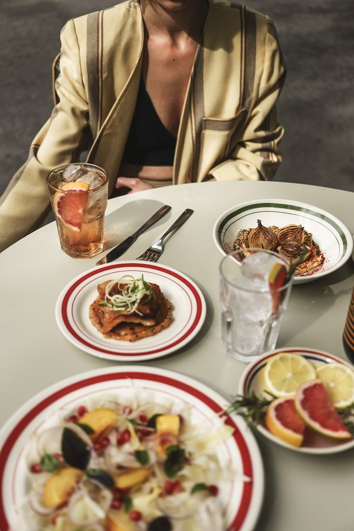

La Central
Somos una vermutería ubicada en el corazón de la ciudad de Mendoza, contamos con el mejor vermú tirado, sifones, y cócteles de autor, acompañados de una fina carta gastronómica de influjo español e italiano. La carta de La Central tiene una propuesta diversificada que incluye varios platos vegetarianas y/o veganos. Te esperamos